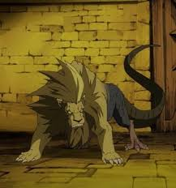

Quimera
Una quimera es un ser creado artificialmente mediante alquimia, combinando el cuerpo y las características de dos o más seres vivos (generalmente animales y/o humanos) en un solo organismo. Su creación está entre los experimentos más oscuros y éticamente cuestionables de la alquimia, y representa la deshumanización científica en busca de poder o utilidad militar.
Historia
Las quimeras son el resultado de la transmutación forzada de seres vivos. Aunque en la antigüedad se intentaban como curiosidad científica, con el tiempo su uso se volvió más militar y experimental. Los alquimistas estatales, especialmente los que trabajaban en secreto con el ejército o bajo órdenes de Padre, realizaron los experimentos más terribles.
Uno de los primeros casos más impactantes fue el del alquimista Shou Tucker, quien con tal de no perder su licencia del Estado, fusionó a su hija Nina con su perro Alexander, creando una quimera parlante que aún conservaba la voz y sentimientos de la niña. Este acto generó un profundo trauma en los hermanos Elric y sirvió como crítica al uso inhumano de la ciencia.
Tipos de quimeras
Quimeras animales
- No tienen conciencia humana.
- Son agrasivas o salvajes.
- Se usaban como base para experimentos más complejos.
Quimeras humano-animales
- Pueden hablar, razonar y tomar decisiones.
- Conservan su humanidad aunque su cuerpo este alterado.
- Obtienen habilidades como fuerza, velocidad, sentidos agudos o capacidades especiales.
Quimeras parlantes
- Suelen estar deformadas y sufrir psicológicamente.
- A menudo pierden completamente su identidad humana.
- Representan el lado más cruel de la alquimia.
Quimeras monstruosas
- Solo obedecen órdenes o actúan por instinto.
- No pueden hablar ni pensar.
- Fueron usadas como guardianes del Laboratorio 5 o como soldados desechables.
Quimeras múltiples
- No tienen conciencia.
- A veces se utilizan como base para otros experimentos más avanzados.
- Son dolorosamente inestables y deformes.
Descripcion
Fusiones entre dos o más animales. Generalmente creadas como experimentos para combinar fuerza, velocidad o sentidos de diferentes especies.
Características:
Descripcion
Fusiones entre humanos y animales que conservan la conciencia y personalidad del humano. Son los más comunes en la serie.
Características
Descripcion
Fusiones forzadas de humanos con animales, en donde el ser resultante conserva solo parte de la conciencia o la capacidad de hablar.
Características
Descripcion
Criaturas altamente deformes creadas con fines militares o experimentales, sin conciencia ni inteligencia.
Características
Descripcion
Fusiones de varios humanos entre sí, a menudo usadas como parte de experimentos relacionados con la creación de la Piedra Filosofal.